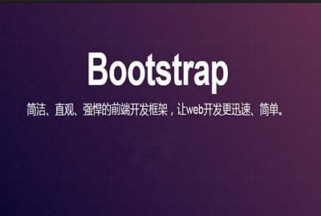

张勇的博客
首页
分类
归档
标签
开源
关于
WEB前端基础
发表于：2018-08-23
分类于：前端
阅读数：50
前端对于网站来说，通常是指，网站的前台部分包括网站的表现层和结构层。 因此前端技术一般分为前端设计和前端开发，前端设计一般可以理解为网站的视觉设计， 前端开发则是网站的前台代码实现，包括基本的HTML和CSS以及JavaScript/ajax， 现在最新的高级版本HTML5、CSS3，以及SVG等。
阅读详情 >>
Javascript
发表于：2018-08-23
分类于：前端
阅读数：50
JavaScript一种直译式脚本语言，是一种动态类型、弱类型、基于原型的语言，内置支持类型。 它的解释器被称为JavaScript引擎，为浏览器的一部分，广泛用于客户端的脚本语言， 最早是在HTML（标准通用标记语言下的一个应用）网页上使用，用来给HTML网页增加动态功能。
阅读详情 >>
jquery
发表于：2018-08-23
分类于：前端
阅读数：50
jQuery是一个快速、简洁的JavaScript框架，是继Prototype之后又一个优秀的JavaScript代码库（或JavaScript框架）。 jQuery设计的宗旨是“write Less，Do More”，即倡导写更少的代码，做更多的事情。 它封装JavaScript常用的功能代码，提供一种简便的JavaScript设计模式，优化HTML文档操作、事件处理、动画设计和Ajax交互。
阅读详情 >>
Bootstrap
发表于：2018-08-23
分类于：前端
阅读数：50
Bootstrap是美国Twitter公司的设计师Mark Otto和Jacob Thornton合作基于HTML、 CSS、JavaScript 开发的简洁、直观、强悍的前端开发框架，使得 Web 开发更加快捷。 [1] Bootstrap提供了优雅的HTML和CSS规范，它即是由动态CSS语言Less写成。
阅读详情 >>

1
2
3